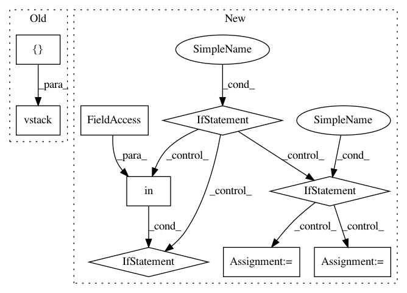

2e7c0700d00da702cdccb7c19b6fe1857b5bd1b7,imblearn/under_sampling/prototype_generation/cluster_centroids.py,ClusterCentroids,_sample,#ClusterCentroids#Any#Any#,111
Before Change
X_resampled = np.concatenate((centroids))
if sparse.issparse(X):
X_resampled = sparse.vstack([sparse.csr_matrix(X_resampled),
safe_indexing(X, idx_under)])
else:
X_resampled = np.vstack((X_resampled, safe_indexing(X, idx_under)))
y_resampled = np.hstack((y_resampled, safe_indexing(y, idx_under)))
After Change
self._validate_estimator()
if self.voting == "auto":
if sparse.issparse(X):
self.voting_ = "hard"
else:
self.voting_ = "soft"
else:
if self.voting in VOTING_KIND:
self.voting_ = self.voting
else:
raise ValueError(""voting" needs to be one of {}. Got {}"
" instead.".format(VOTING_KIND, self.voting))
X_resampled, y_resampled = [], []
for target_class in np.unique(y):
if target_class in self.ratio_.keys():
n_samples = self.ratio_[target_class]
In pattern: SUPERPATTERN
Frequency: 3
Non-data size: 9
Instances
Project Name: scikit-learn-contrib/imbalanced-learn
Commit Name: 2e7c0700d00da702cdccb7c19b6fe1857b5bd1b7
Time: 2017-08-24
Author: g.lemaitre58@gmail.com
File Name: imblearn/under_sampling/prototype_generation/cluster_centroids.py
Class Name: ClusterCentroids
Method Name: _sample
Project Name: ContextLab/hypertools
Commit Name: 7c2673280add4356814a56e5a4253bd959630e95
Time: 2016-12-22
Author: andrew.heusser@gmail.com
File Name: python/hypertools/plot/plot.py
Class Name:
Method Name: plot
Project Name: ContextLab/hypertools
Commit Name: 529c4bc269f6c3a265d49b97393cbc6ecbcf5f94
Time: 2016-12-22
Author: andrew.heusser@gmail.com
File Name: python/hypertools/plot/plot.py
Class Name:
Method Name: plot